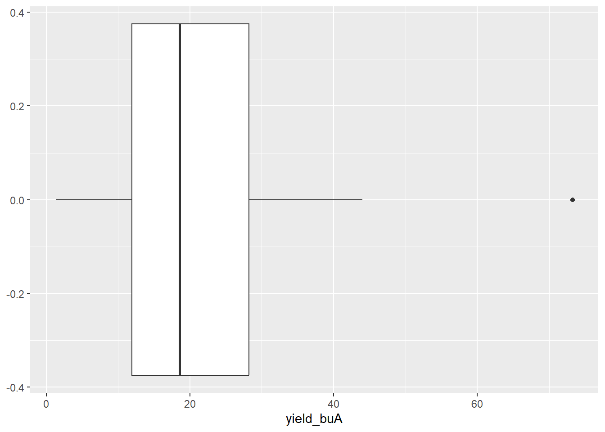
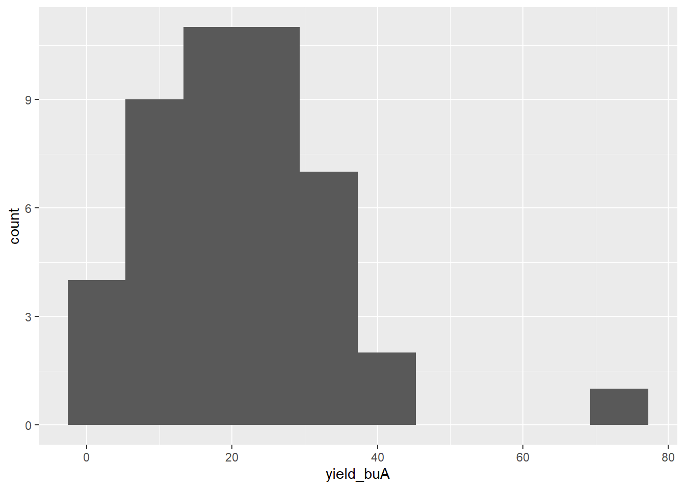
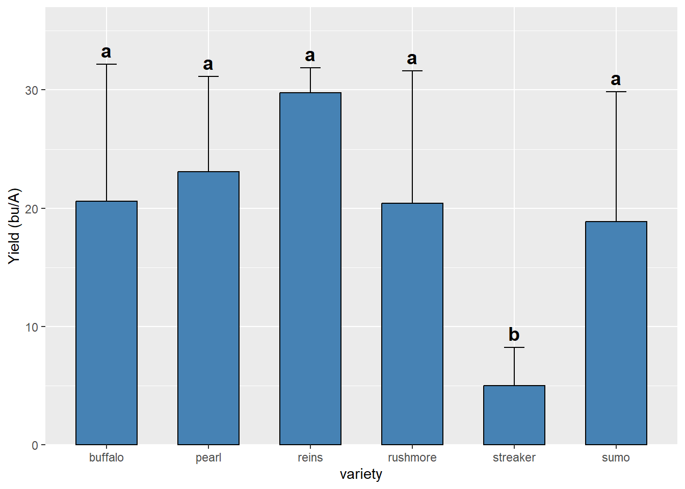

plot variety yield_buA
1 b b 0.0000000
2 103 rushmore -0.3187613
3 105 reins 0.0000000
4 b b 2.3330611
5 202 streaker 1.3706734
6 204 sumo 4.4810476
7 404 streaker 3.8298227Canola post-harvest report
2026
link to data: https://docs.google.com/spreadsheets/d/1ml19auVGN_UbLh8oInLiq-tuMqL3cMiNWMRKpR9gt9Y/edit?gid=202925901#gid=202925901
1 Narrative
Oat variety trial 2026
Seed packaged in 2024
Planted 4/29
Harvested 8/5
Combine settings
drum=1540, distance 11, blower 3000
Average MN Oat yield is 80 bu A. High is over 100 and low is below 70, with anything below 25 as very low.
2 data qaqc
2.1 Outliers
There are two plots with no yield or negative yield. This is combine error and will be removed
What about other plots in block 1
plot variety yield_buA
1 101 sumo 17.384150
2 102 pearl 34.593185
3 104 streaker 9.033984
4 106 buffalo 13.110789remainder of block 1 looks fine

What about high yielding plot?
plot variety yield_buA
1 b b 73.24536It’s a border with relatively high yield

3 Summary
# A tibble: 7 × 4
variety mean sd n
<chr> <dbl> <dbl> <int>
1 b 23 23 23
2 buffalo 21 21 4
3 pearl 23 23 4
4 reins 30 30 3
5 rushmore 20 20 3
6 streaker 5 5 4
7 sumo 19 19 4 Df Sum Sq Mean Sq F value Pr(>F)
variety 6 1350 225.1 1.414 0.235
Residuals 38 6049 159.2 Df Sum Sq Mean Sq F value Pr(>F)
variety 5 1213 242.68 3.114 0.0376 *
Residuals 16 1247 77.92
---
Signif. codes: 0 '***' 0.001 '**' 0.01 '*' 0.05 '.' 0.1 ' ' 1$statistics
MSerror Df Mean CV
77.92389 16 19.13078 46.14266
$parameters
test p.ajusted name.t ntr alpha
Fisher-LSD none variety 6 0.05
$means
yield_buA std r se LCL UCL Min Max
buffalo 20.598218 11.560312 4 4.413725 11.241539 29.95490 8.391878 31.430959
pearl 23.085980 8.063193 4 4.413725 13.729300 32.44266 16.643891 34.593185
reins 29.768471 2.081740 3 5.096531 18.964308 40.57263 28.208061 32.132179
rushmore 20.420073 11.172354 3 5.096531 9.615909 31.22424 7.525266 27.205790
streaker 5.010604 3.238655 4 4.413725 -4.346075 14.36728 1.370673 9.033984
sumo 18.883083 10.970226 4 4.413725 9.526403 28.23976 4.481048 30.365687
Q25 Q50 Q75
buffalo 11.931061 21.28502 29.952176
pearl 18.048058 20.55342 25.591342
reins 28.586617 28.96517 30.548676
rushmore 17.027214 26.52916 26.867476
streaker 3.215035 4.81888 6.614449
sumo 14.158375 20.34280 25.067507
$comparison
NULL
$groups
yield_buA groups
reins 29.768471 a
pearl 23.085980 a
buffalo 20.598218 a
rushmore 20.420073 a
sumo 18.883083 a
streaker 5.010604 b
attr(,"class")
[1] "group"